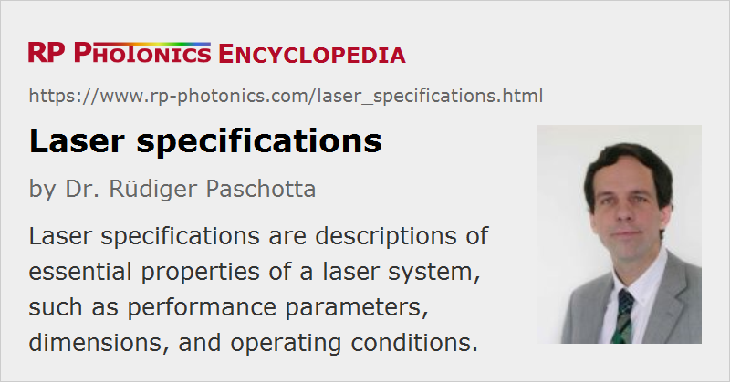

Laser Specifications
Definition: descriptions of essential properties of a laser system, such as performance parameters, dimensions, and operating conditions
More specific terms: noise specifications
German: Spezifikationen von Lasern
How to cite the article; suggest additional literature
Author: Dr. Rüdiger Paschotta
For commercially sold lasers and laser systems, it is common to have a set of laser specifications, i.e., of more or less precise descriptions of their properties, as far as these are relevant for the users. (Internal details, which do not directly affect the user, are usually not specified.) Such specifications (in short: specs) are made by suppliers of lasers (usually by the manufacturers), but also a buyer will usually write down the required specifications for his application before selecting a laser model. Most aspects of this article apply both to certain laser components and to complete laser systems.
Laser specifications are important for different purposes:
- The buyer of a laser needs to be informed about the essential properties of a laser system before buying and when applying a system. Some key performance figures such as output power and beam quality normally need to be guaranteed, and various details must be known for proper application, for example for combining the laser with other devices.
- Specifications are often included in quotations and purchase orders in order to define duties of the supplier and conditions for use. In cases of conflict between user and supplier, specifications may be used to determine whether or not a laser system is delivering what it could be expected to deliver.
For most purposes, it is important that laser specifications are clear and precise, well understandable for all involved parties, and complete. In practice, specifications are often deficient concerning one or several of these aspects, because insufficient know-how and experience was available for writing them, or the task was carried out with insufficient diligence. Such deficiencies can cause substantial technical and other problems. For example, incomplete specifications may make the selection of a laser complicated, create uncertainties for the application of a system, raise unrealistic expectations, or cause errors in the integration of laser products into other machinery. In cases of conflict, parties may insist on incompatible interpretations of unclear specifications or of the consequences of deviations, and this can contribute to expensive, time-consuming and risky legal conflicts.
Because such problems can be severe, a high degree of diligence is recommended
- when formulating specifications for an existing product,
- when defining the requirements for some application, and
- when determining whether a certain system will be suitable for an application.
However, certain important aspects are easily overlooked, particularly when no substantial experience with the type of devices or their application is available. For example, a user may not be aware of certain typical problems and limitations of certain laser types, while a manufacturer may not be aware of certain critical issues for an application.
Types of Specifications
Specifications can address very different aspects, such as performance figures, device lifetime, required ambient condition, and other properties such as dimensions, weight and mounting details.
Performance Specifications
It is normally of central importance for the buyer of a laser system that certain performance figures are reached. What performance figures exactly are relevant, depends both on the details of the system and its application. Some typically important specifications concern the following aspects:
- The output power must stay within certain limits. Note that the output power may depend on additional conditions. For example, for pulsed lasers the average output power may depend on the chosen pulse repetition rate, and for tunable lasers it normally varies with the chosen wavelength.
- Various properties of the output laser beam need to be defined, in particular its transverse size: the beam radius (or diameter) at the exit from the laser housing, whether the beam is collimated, otherwise (for divergent or convergent beams) where the beam waist is located. Note that different definitions for the beam radius exist.
- The beam quality may be specified via the beam parameter product (BPP) or the M2 factor.
- The polarization may be linear with a given direction (vertical or horizontal). In other cases, the polarization is undefined, or rarely an unpolarized output is even guaranteed.
- For pulsed lasers, relevant quantities can be the pulse repetition rate, pulse energy and duration, pulse shape and possibly a chirp. If the repetition rate can be varied, specifications of the other pulse parameters may be required for different values of the repetition rate. (For Q-switched lasers, for example, higher repetition rates normally imply lower pulse energies and longer pulses.)
- The laser wavelength (usually understood as the central wavelength, defined via the “center of mass”) must stay within certain limits. For tunable lasers, a range of wavelength needs to be defined, and how other properties (e.g., the output power) vary in that range, or at least what minimum specifications are valid for that range.
- There is often an upper (and sometimes a lower) limit for the optical bandwidth, which is related to the temporal coherence of the laser light. One may also specify the limits for the coherence length. For example, a sufficiently short coherence length may be required to avoid problems with interference effects.
- Various kinds of fluctuations (laser noise) may be limited. For example, one may specify the maximum r.m.s. (root mean squared) fluctuations within a certain measurement bandwidth, possible in the form of relative intensity noise (RIN). Phase noise is related to the optical bandwidth (see above), but more comprehensive (frequency-resolved) phase noise specifications may be required in the form of a maximum power spectral density versus noise frequency. The beam pointing stability may be specified as an r.m.s. value of the angular deviations within a certain measurement time and bandwidth.
Often, specifications are valid only after a certain warm-up time after switching on a laser system.
Although this list contains all the typically relevant aspects, many additional aspects may also be relevant, depending on details of the laser system and the application.
Laser Safety
It is common to define a laser safety class for a laser source, even though the safety class for the system into which the laser is integrated may be completely different. If the output power exceeds a certain limit (depending on the wavelength) and the laser beam is accessible, the system will normally be in class IV (the most safety-critical one). If such a laser is put into a fully enclosed housing, with interlocks etc., the system may still be in the class I, where it can be considered as very safe.
Lifetime Specifications
Lasers, as other devices, have only a limited lifetime. The guaranteed lifetime may be specified as a certain number of years or via some number of operation hours, or possible both combined. It is normally understood as the time during which the laser fulfills all the performance specifications. A lifetime guarantee is often subject to additional conditions to be fulfilled by the user: certain ambient conditions need to be ensured (see below), and regular servicing may be required.
Note that quite different interpretations of device lifetimes are possible. A strict interpretation would be that a laser system has to stay within specifications for the whole lifetime without any unplanned intervention. For a fiber amplifier, which is integrated in an undersea cable, this is very reasonable, since it is hardly possible to perform any service operations after deployment. For industrial lasers, however, occasional repairs may be tolerated, if they are not so frequent and/or time-consuming that the severely disturb the intended application. A rather lax interpretation of lifetime guarantee would be that the supplier can make as many repairs as required for reaching an overall long enough time of operation, and resulting interruptions and delays are not considered as problematic.
Ambient Conditions
Laser system are often relatively sensitive to ambient conditions. Some typical aspects are shortly discussed in the following:
- The ambient temperature (air temperature and/or temperature of the table on which the system is mounted) must remain within certain limits. Deviations from that condition may lead not only to degraded performance but even to serious damage.
- If the laser housing is not hermetically sealed, there may be requirements on how clean the surrounding air needs to be, in what range the relative humidity needs to be, or whether purging e.g. with dry nitrogen gas is needed.
- Many lasers require a laser cooling units as a supply of cooling water, with conditions concerning the water pressure, the available water flow, and the chemical composition (e.g., pH value and salt content). While an interruption or insufficient strength of water flow should trigger an automatic system shut-down, not appropriate chemical condition of the cooling water may lead to permanent damage. Microchannel coolers of laser diodes are particularly sensitive to effects of corrosion under such circumstances. Some isolated laser components or OEM laser modules may not have an automatic shutdown at excessive temperatures.
- Most lasers should not be exposed to excessive mechanical vibrations. Precise specifications in that respect are often not given, but at least some indication concerning how well a laser must be protected e.g. against vibrations caused by nearby machinery.
- May laser devices are sensitive to back-reflected light. It might be specified what level of reflections can be tolerated.
Other Properties
Various other properties of a laser system can be relevant, for example:
- the dimensions of the housing
- in case of multiple parts (laser head, power supply, etc.): dimensions of all parts, cable lengths, etc.
- the weight
- the exact location where the generated laser beam leaves the housing
- types of fiber-optic connectors and/or parameters of the output fiber
- connections for additional parts such as interlocks
- electrical specifications for certain inputs (e.g. pulse triggers) and outputs
- accessibility of the housing e.g. for service operations
- details of the mounting and installation
- electrical power requirements, cable lengths
- service requirements, e.g. intervals for regular service and/or for replacing consumables
Of course, not all details may be given in some specification sheet; they may be provided only to those customers who ask for them.
Examples for Vague Laser Specifications
Many specifications which may look fairly clear at a first glance can nevertheless be quite deficient. A few examples demonstrate that:
- “Output power: 25 W”: this is probably the lower limit; is there no upper limit? For a pulsed laser: it is probably the average output power, but is this valid for the full range of pulse repetition rates?
- “Pulse energy: 50 mJ”: probably a lower limit; does this only apply for a low enough pulse repetition rate?
- “Pulse pedestals: < 3%”: is that a limit for the power or for the energy in pedestals?
- “Spot size: 2 mm × 1.5 mm”: are these beam diameters in horizontal and vertical direction? Measured at which location – at the laser exit or at some focus position? Is it a full width at half maximum, or measured at 1/e2 intensity level or whatever else?
- “Beam profile: TEM00”: apparently, the beam is close to a diffraction-limited Gaussian beam, but how close? An upper limit for the M2 factor would be more precise.
- “Divergence angle: < 2 mrad”: is this a full angle or half angle (i.e., against the beam axis)? Is it based on an 1/e2 intensity criterion?
- “Output power stability: ±1%”: this is extremely vague: does it mean that the power always stays within ±1% of the average value? What is the measurement time and bandwidth? (Typically, larger fluctuations are recorded with a fast detector used over a long time.) A root-mean-squared (r.m.s.) value with a well defined bandwidth (range of noise frequencies) should be given.
- “Optical bandwidth: 0.1 nm”: is this meant as a full width at half maximum? Is it an upper or lower limit for the bandwidth? (Usually, it is the upper limit, but there are cases where a lower limit is required.)
- “Tuning range: 1030–1080 nm”: does the laser just work in that range, or is the specified output power available over this whole range?
- “Linewidth: < 50 kHz”: what is the measurement time? (Slow frequency drifts can lead to larger values for longer measurements times.)
- “Timing jitter: < 100 fs” (for an ultrafast laser): is this a pulse-to-pulse jitter? (Probably not, that should be far lower.) What is the considered range of noise frequencies?
Further problems or inconvenience can result from not common acronyms or units.
How Strictly Should Specifications be Interpreted?
Laser specifications are often not interpreted as strictly guaranteed values. What level of strictness is applied, depends substantially on the field of application:
- Quite strict interpretations are common in fields which generally exhibit a high degree of standardization, such as optical fiber communications, optical clocks or medical lasers. Here, a high precision of specifications is particularly important, and not completely adhering to them is considered as serious.
- For industrial lasers, a slightly lower degree of strictness is often applied, although a high degree of reliability in long-term operation may be quite important.
- Rather lax interpretations occur in the context of consumer products, but also often for scientific lasers. In the latter case, it is often expected that the users are fairly familiar with the internal workings of a laser apparatus and can take over some tasks, such as occasional cleaning or realignment of a laser, or exchanging the laser medium of a dye laser. Relatively frequent interruptions of laser operation for unplanned service operations may be tolerated. It is often accepted that optimum performance is possible only under ideal conditions, including e.g. frequent optimization of alignment.
Another aspect is whether a laser device is a prototype, a mass product or even a production machine. A prototype nature may be assumed when a laser has been made to certain specifications for the first time and the user knows this; a laser may be ordered explicitly for evaluation purposes. To a certain degree, deviations from specifications may not be considered as complete failures. On the other hand, from a standard industrial laser for use as a production machine one has to expect a high reliability including to fairly strict adherence to specifications.
In cases where adherence to specifications is crucial, a laser system will normally be delivered together with a comprehensive and clearly written measurement protocol, demonstrating that all relevant aspects have been checked on the concrete delivered device. However, many manufacturers appear not to apply such systematic procedures, do not deliver such measurement protocols, and indeed might not check all aspects with measurements before deployment. Deviations from specifications may then be noticed only after installation, or possible even at a later time when the user, having experienced certain problems, undertakes more detailed measurements.
What Happens if Specifications are not Fulfilled?
It is important to understand whether certain deviations from specifications are considered as complete failure of the system (implying a right for a complete replacement or for not paying the invoice) or only as a reason for repair by the manufacturer. For some critical laser applications, the user can expect that the device is only delivered after careful checks by the manufacturer, and that it will with a high probability remain within specifications for the guaranteed lifetime – without additional checks and unplanned repairs. In many cases, however, a manufacturer feels obliged only to do appropriate repairs upon discovery of problems by the user. This may lead to situations where the application of the laser is severely disturbed by unplanned repairs and corresponding delays, possibly also by extended periods of operation outside the specs due to not recognized problems, and to resulting quality issues in the production.
For such reasons, it is important to create a common understanding between supplier and user before purchase according to how deviations from specifications are handled. Note that even specifications with very precise definitions of measured parameters may totally leave open such important aspects.
Questions and Comments from Users
Here you can submit questions and comments. As far as they get accepted by the author, they will appear above this paragraph together with the author’s answer. The author will decide on acceptance based on certain criteria. Essentially, the issue must be of sufficiently broad interest.
Please do not enter personal data here; we would otherwise delete it soon. (See also our privacy declaration.) If you wish to receive personal feedback or consultancy from the author, please contact him e.g. via e-mail.
By submitting the information, you give your consent to the potential publication of your inputs on our website according to our rules. (If you later retract your consent, we will delete those inputs.) As your inputs are first reviewed by the author, they may be published with some delay.
See also: noise specifications, laser safety, laser applications, industrial lasers, scientific lasers, medical lasers
and other articles in the categories lasers, methods
|  |
If you like this page, please share the link with your friends and colleagues, e.g. via social media:
These sharing buttons are implemented in a privacy-friendly way!